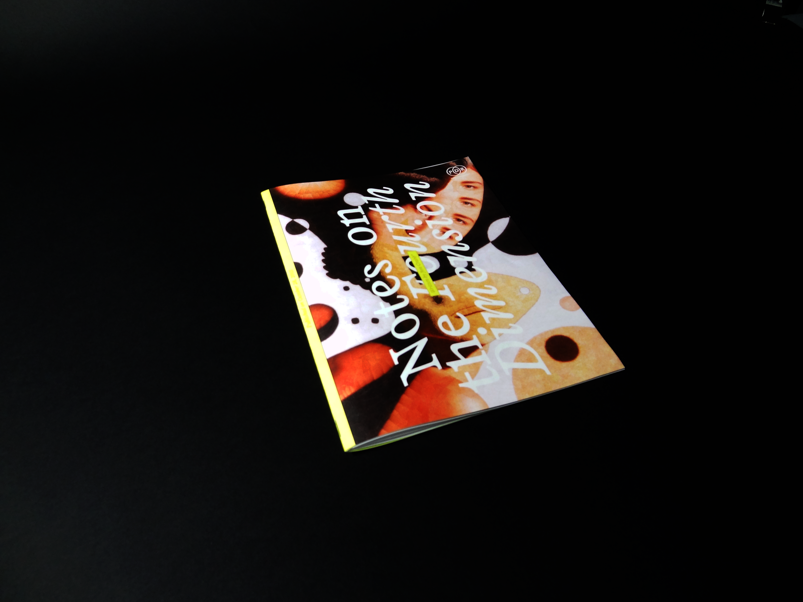
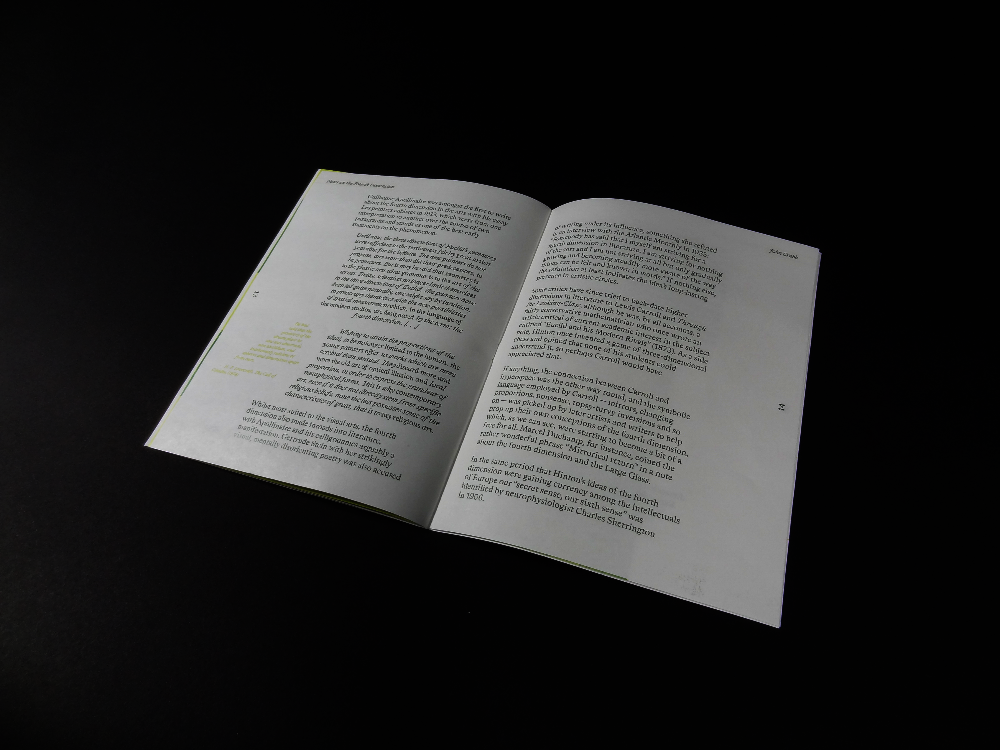
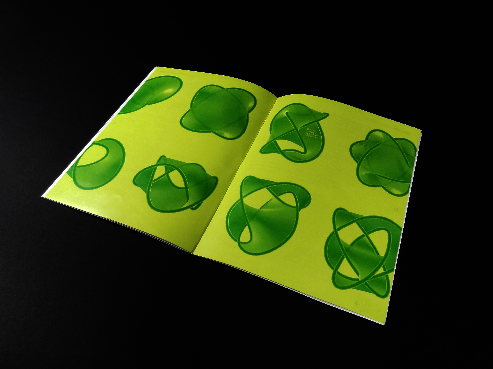
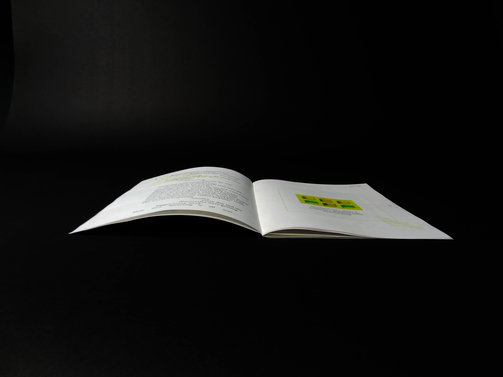
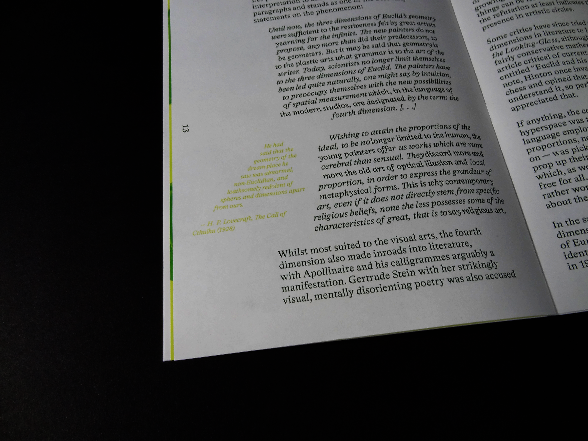
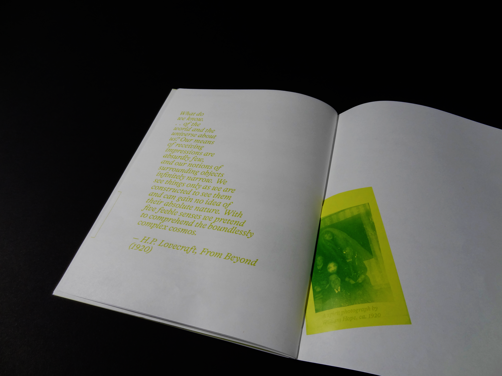

A speculative editorial design of the essay, "Notes on the Fourth Dimension." Jon Crabb discusses the development of the concept of the fourth dimension over time, starting from mathematicians and the adoption from artists. I became interested in the layering that was historically considered and informed many artists to create. I wanted to visually translate this with breaking traditional boundaries of columns and creating shapes with paragraphs as well as allowing for overlap. Throughout the magazine, the bright green is deliberately considered to communicate the historical and futuristic aspects of the essay.





